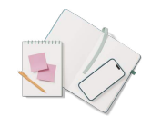

Design process
Research & requirement gathering
To efficiently learn about the current scenario, I used these methods:

Business analysis
Developing service blueprint to visualizing user touch points & their journey, highlighting potential areas of improvement.

Internal research
Engaging with management & medical team to align objectives, ensuring a holistic understanding from healthcare professionals.

External research
Validating our assumptions, gathering user feedback & assessing competitors approach to plan our development priorities.